11AI provider options
4menu languages
0AI calls for preference questions
01
DESCRIBE IT
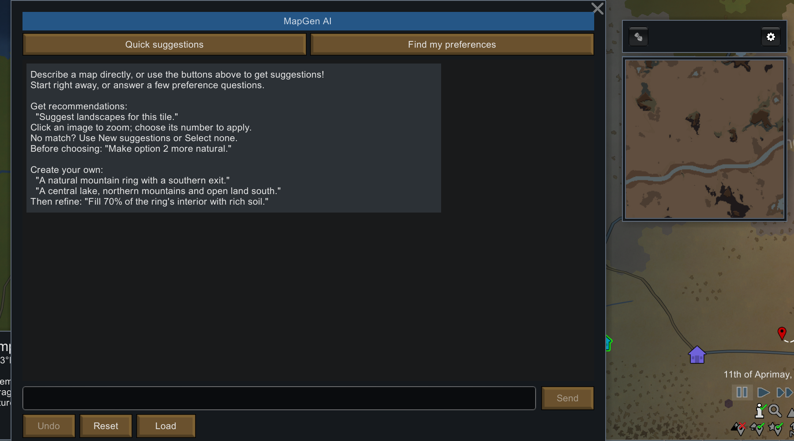
Select a tile on the world map and open ✦ AI Map Gen. The chat opens next to Map Preview.
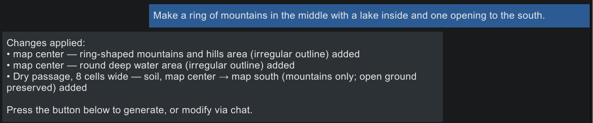
Type what you want. The reply lists exactly what changed.
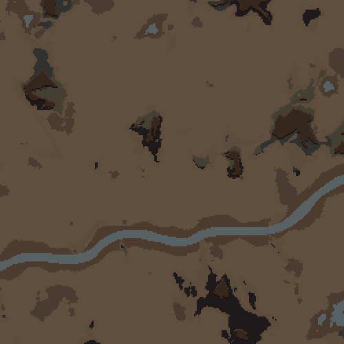
Before
▶
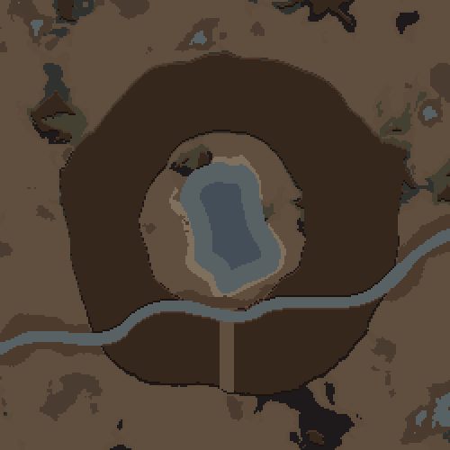
After
Map Preview of the same tile, before and after that one request.
1 · TYPEDescribe the map in plain words, or press Quick suggestions.
2 · PREVIEWThe AI turns your words into map settings. Map Preview redraws the tile.
3 · GENERATEPress Generate with these settings, then start or settle there.
02
KEEP EDITING
Each request builds on the last one. Earlier changes stay.
 1"Make a ring of mountains in the middle with a lake inside and one opening to the south."
1"Make a ring of mountains in the middle with a lake inside and one opening to the south."
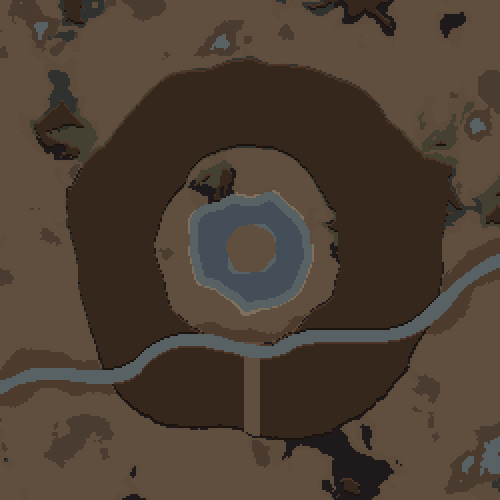
2"Add a small island in the middle of the lake."
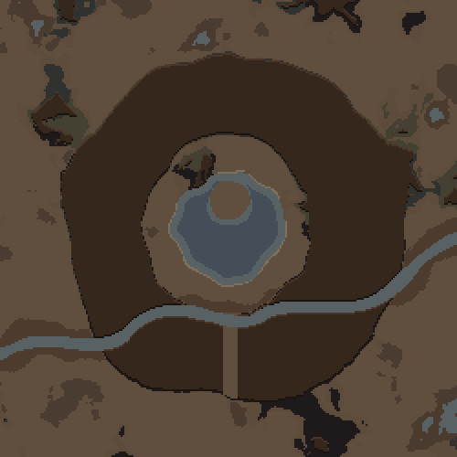
3"Move the island to the north side of the lake."
Change the geography
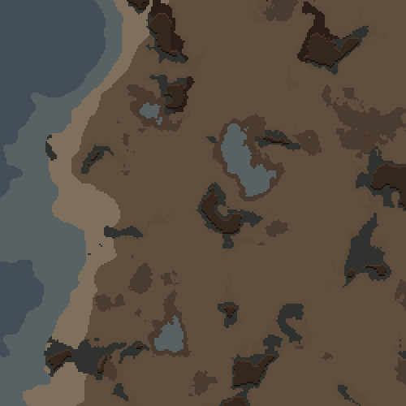
Before
▶
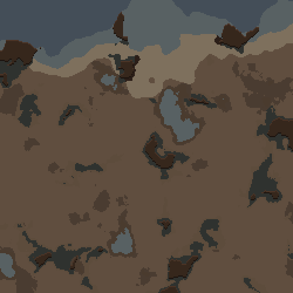
After
"Put the coast on the north side." World rivers and coasts stay connected. You can turn them, but not delete them.
Undo steps back one request. Reset returns the tile to its original map.
Exact or natural outlinesPartial fillsRuins and ancient dangersRoads with bridgesPresets
03
GET IDEAS
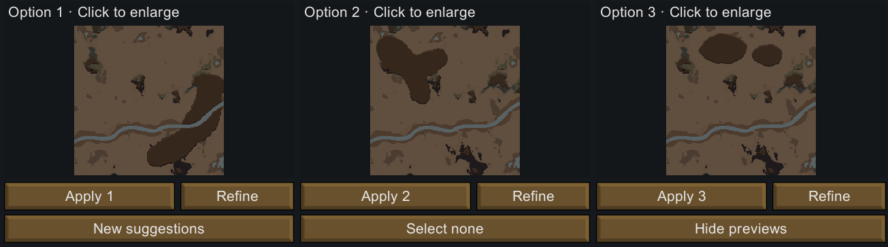
"Recommend a map." Up to three candidates, each drawn by Map Preview. Nothing changes on your map until you pick one.
Refine one before you pick
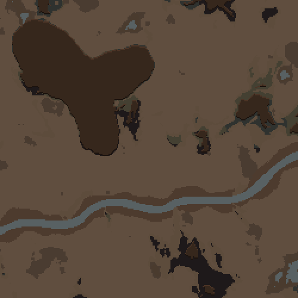
Option 2
▶
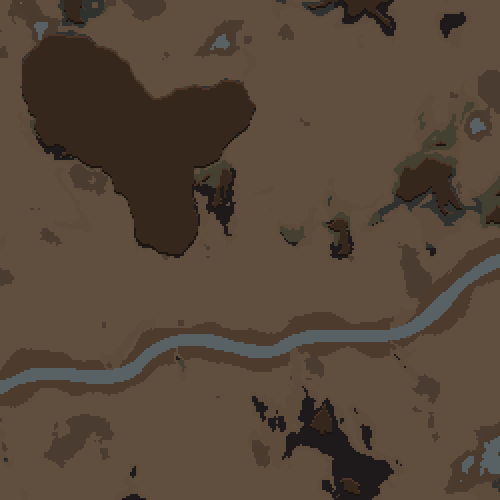
Refined
"Make option 2 more natural." Only option 2 is redrawn. The other candidates stay as they were.
Find my preferences · no AI calls
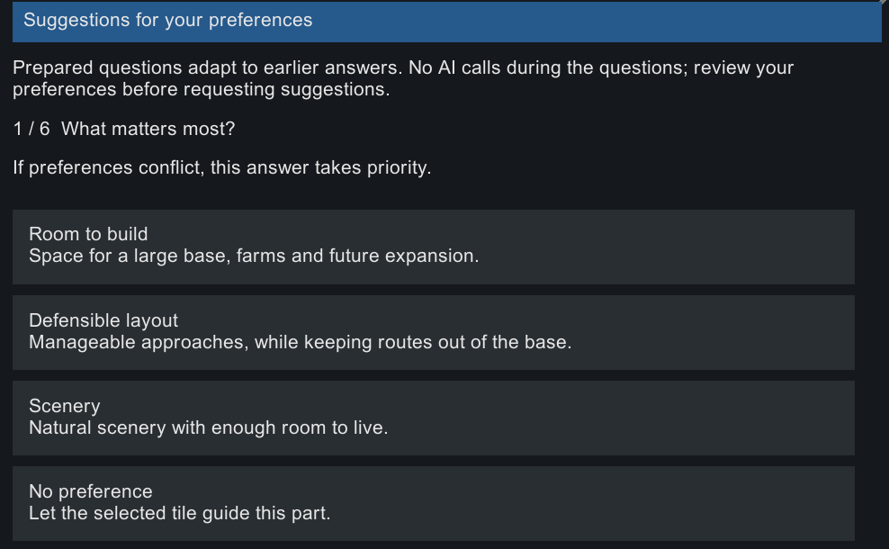
Not sure what you want? Answer a few prepared questions about space, defense, scenery, mountains, and water, then ask for ideas that fit.
04
PLAY IT
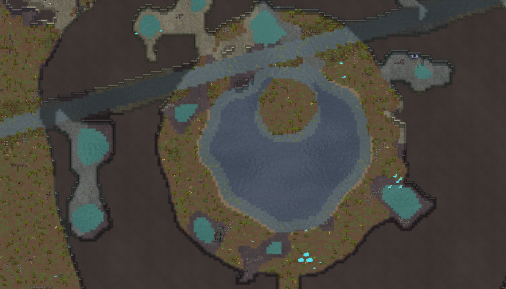
The real map generated from the same chat session, after a few more edits: a straightened river and hot springs.
Map Preview shows terrain and layout. Plants, buildings, and loot appear when the real map is generated.